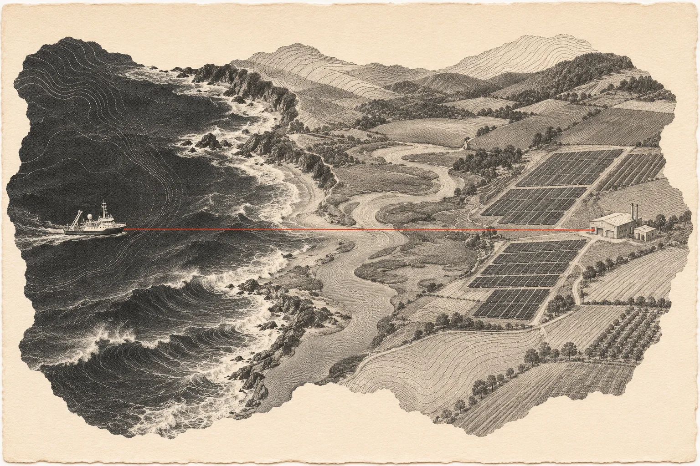
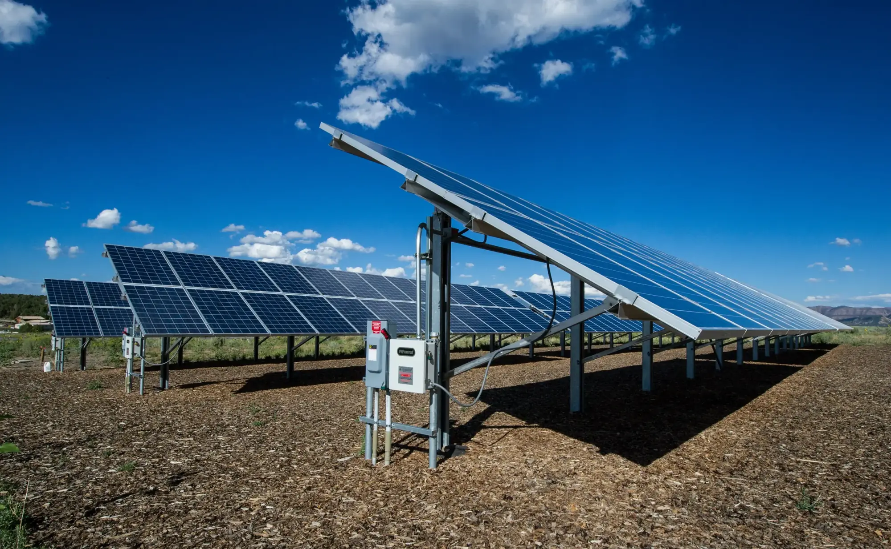

About Common Ground
Building software is cheap now.
Getting it to the right people isn’t.
A fund’s portfolio companies solve the same problems over and over: cleaning sensor data, reconciling exports, checking what came off a device. Each team builds its own tool, and none of them knows the others did.
Common Ground is a software factory that the fund runs for its portfolio. Engineers describe a tool in their editor; a coding agent builds it against the fund’s shared data standard; independent checks seal the exact version. Then the factory does the part nobody does today: it finds who else in the portfolio needs that tool, and the author decides who gets it.
The fund sets the boundary. Each company keeps control of what it shares and receives.

01 / Why a fund
The portfolio is already a network.
A fund sees every company it backs, but the engineering inside them stays separate. Common Ground gives that network three things it doesn’t have.
- 01
A shared standard.
Each company maps its own data once to the fund’s standard: a time, a value, its unit and cadence. A tool built at one company then runs on another company’s data without a rewrite.
- 02
Organizational primitives.
Fund, company, engineer. Who may publish, who may receive, whether work can cross company lines and for how long. The rules live in one place and apply to every share.
- 03
A record of what travelled.
Every reuse is counted, with the exact version and the company it reached. The fund can see which tools earn their keep across the portfolio.
02 / The factory line
From a requirement to the next company.
The factory runs the whole cycle in the engineer’s editor. Distribution is part of the line, not an afterthought.
Build
- RequirementThe engineer describes the tool. The requirement is recorded so every version traces back to it.
- BlueprintThe factory states what will be built against the fund’s standard before any code exists.
- BuiltA coding agent writes the tool from the brief.
- Seven checksIndependent checks run in a sandbox on public NOAA and NREL data. A failure goes back to the agent.
- SealedThe exact code that passed gets a hash. Change one character and it has to pass again.
Distribute
- SuggestedThe factory finds people at other companies whose workflow briefs and reuse history point to the same need.
- SharedThe author approves who receives that exact version. Nothing goes out automatically.
- ReboundThe recipient runs the same code with their own company’s data mapping.
- CountedThe reuse shows up for the author, the company and the fund.
03 / The fund’s view
See the work that travels.
The fund’s console shows each reuse across the portfolio, the proof behind every tool, and which companies are ready to receive one.
Overview
5 tools shared across the portfolio have been reused 4 times, representing an author-estimated 68 engineering hours. 3 of 5 companies are live on Sensor time-series v1.
Recent reuse
All tools- telemetry-inspectorMaya Chen at Palmetto adapted it to their data

- pv-gap-finderJon Bell at Mast Reforestation downloaded it

- canopy-sensor-qaElli Novak at Palmetto downloaded it
- telemetry-inspectorRhea Malik at Mast Reforestation downloaded it
- pv-gap-finderFabio Rossi at Saildrone adapted it to their data
- telemetry-inspectorTheo Park at Saildrone downloaded it
- glider-feed-qcInes Duarte at Saildrone downloaded it
Most reused
- telemetry-inspectorSaildrone
- pv-gap-finderPalmetto
- glider-feed-qcSaildrone
- canopy-sensor-qaMast Reforestation
- inverter-gap-reportPalmetto
Companies
View all- Saildrone5 people · 2 toolsLive
- Palmetto3 people · 2 toolsLive
- Mast Reforestation2 people · 1 toolLive
 Groq1 person · 0 toolsSetting up
Groq1 person · 0 toolsSetting up Netskope0 people · 0 toolsSetting up
Netskope0 people · 0 toolsSetting up
telemetry-inspector
Finds missing, duplicate and off-grid readings in any sensor time series before they reach a model.
Reused 3 times at 3 companies, about 48 hours not spent rebuilding it.
Who reused it
3 reuses- MCMaya ChenPalmetto · adapted it to their data
- RMRhea MalikMast Reforestation · downloaded it
- TPTheo ParkSaildrone · downloaded it
Details
- Author
- FRFabio Rossi
- Company
- Saildrone
- Added
- 15d ago
- Built by
- Coding agent, from a brief
- Time to build
- 16 hours
- Version
- c54c31b
Checks
7 of 7 passed- NOAA ocean sample: 1,440 rows, 55 missing wind values
- NREL solar sample: 1,440 rows, negative power kept
- Finds three missing timestamps and one duplicate
- Finds missing first and last observations
- Zero is a reading; malformed is separate
- Rejects a wrong units-row assumption
- Unseen window with duplicates and off-grid rows
Version c54c31b is the exact code that passed. Any change runs the checks again.
Portfolio
5 companies in Social Capital’s portfolio, 3 live on the standard, with 11 people between them.
| Company | People | Data | Tools | Reuses | Status |
|---|---|---|---|---|---|
| Saildronesaildrone.com | 5 | Mapped | 2 | 4 | Live |
Palmettopalmetto.com | 3 | Mapped | 2 | 2 | Live |
| Mast Reforestationmast.eco | 2 | Mapped | 1 | 1 | Live |
| Groqgroq.com | 1 | In progress | 0 | 0 | Setting up |
| Netskopenetskope.com | 0 | Not started | 0 | 0 | Setting up |
04 / Finding useful work
Find reusable work beyond your own team.
Common Ground uses shared workflow briefs, recorded reuse, and compatibility to suggest who could benefit from a tool. Company permissions and each person’s receiving preferences determine who is eligible.
The ocean and solar teams are our demonstration.
An ocean research team and a solar operator both need to detect gaps in sensor readings. They can reuse the same completeness checker by supplying their own data mappings.


time + value + cadenceEach company runs the inspector with its own mapping.This build demonstrates the broader approach with sensor time-series completeness checks on public NOAA and NREL data. Supporting other kinds of tools requires additional contracts and verification suites. The example does not imply customer adoption.
05 / Clear ownership
Each company controls what it shares.
- 01
The fund sets the boundary.
Invite portfolio companies and choose whether work can travel between them. Network membership does not grant access to every company’s code.
- 02
The company supplies the context.
Map a sample, describe the work, and authorize publishers. One account can manage the fund and participate in its own company.
- 03
The engineer stays in their editor.
Review why a checked tool might help someone. Approve the share. The recipient gets that version in VS Code or Cursor, with receiving controls of their own.
06 / Permission to travel
Useful doesn’t mean
available to everyone.
Try this illustrative permission check. Select a person, then change receiving or revoke the share.
telemetry-inspectorc54c31b · Fabio · Saildrone7 of 7 checks
Share with